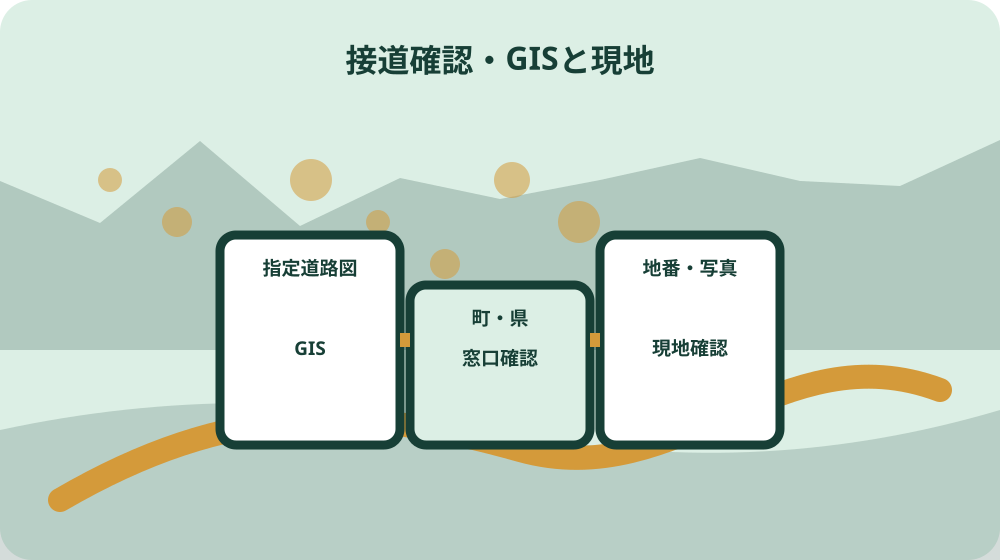
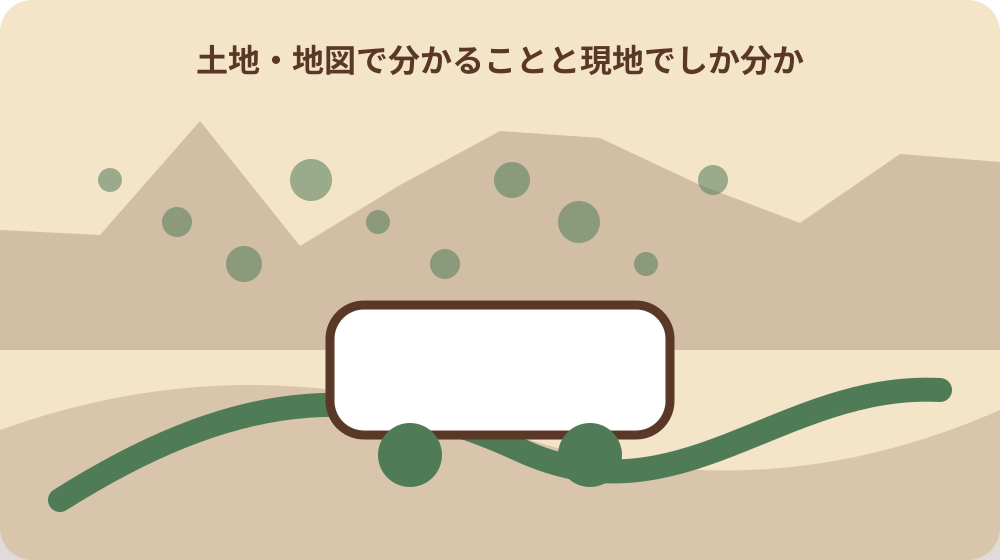

先に結論を確認する
この記事の答え：幅員だけでは決まりません。対象地が都市計画区域内か、その道が建築基準法第42条のどの道路に当たるか、敷地が必要な長さで接するか、後退線をどう扱うかを分けて確認します。県GISは入口に使い、森町を所管する袋井土木事務所建築住宅課へ最新の判定資料を確認します。
森町で最初に照合する条件：森町全域を一括して都市計画区域と考えず、対象地番が令和7年度資料の都市計画区域内かを建設課都市計画係へ確認する。
結論は四本の線を分けた接道確認票を作る
森町で古い家の建替えを考え、前面道路が4メートルに満たないように見えるとき、最初の成果物は見積書ではなく接道確認票です。現況で車が通る端、建築基準法上の道路の基準時中心線、建替え時の後退候補線、土地所有権の境界という四本を別欄に置き、分からない線には確認先と確認日を書きます。
幅員が狭いという観察だけで、建替え不可とも、必ず道路後退が必要とも断定できません。対象地が都市計画区域に入るか、前面の道が第42条のどの区分か、敷地が道路へどう接するかを順に調べます。県GISの色は質問を作る入口であり、最終回答の代わりにはしません。
接道確認票には住所と地番、建替え予定範囲、既存建物と門塀の位置、道路種別、窓口回答、回答に使った図面、未確認事項を記します。設計者へ渡すときは、家族が見た道路端と、公的資料から確認した線を同じ実線で描かず、線の来歴を凡例で示します。
この記事は道路一般や土地購入全般を説明するものではありません。既存家屋の建替え前に、指定道路確認と公共用地境界確認を取り違えず、設計開始を判断できる資料へまとめることだけを扱います。個別の建築可否と後退位置は、所管窓口と建築士等が資料を照合して判断します。
住所・地番・建替え範囲を一枚目に固定する
一枚目には住居表示だけでなく土地の地番を記します。道路の向かい側、通路部分、同じ宅地に見える隣接筆も番号を分け、公図と登記事項の取得日を添えます。道路を検索するときの地点と、建築敷地として計画する筆の集合が違えば、照会結果を別案件へ誤って使うおそれがあります。
既存家屋については建物の位置、玄関、車庫、門、塀、擁壁、側溝、電柱を簡略図へ落とします。どこまで壊し、どこを残す予定かも色分けします。建物だけを建て替えて塀を残せると先に決めず、国資料が門や塀を含む後退を説明している点を設計者への質問にします。
家族から聞いた『昔ここまで道だった』『側溝が境だ』という情報は、現地聞取り欄へ日付と話者を付けて残します。ただし、その記憶を指定道路の中心線や所有権境界へ昇格させません。古写真や旧図面があれば資料名を付け、現在資料との照合待ちとして扱います。
建替えの目的も記します。住宅の同規模建替え、二世帯化、車庫追加、門塀更新では、確認したい配置が違います。将来案を一つに固定できなければ、最小案と希望案を二枚に分け、それぞれで接道条件が配置へどう影響するかを建築士に示してもらいます。
森町の都市計画区域内外を最初に確認する
森町公式の令和7年度資料では、都市計画区域は31.98平方キロメートルで行政区域の23.8パーセントです。町内のすべてが同じ区域ではありません。住所に森町とあるだけで都市計画区域内と決めず、対象地番を都市計画図へ置き、建設課都市計画係へ区域内外を確認します。
同資料は中遠広域都市計画区域を非線引きと説明しています。市街化区域と市街化調整区域という二分をそのまま森町へ当てはめないことが重要です。一方で用途地域内と用途地域指定のない区域には、建ぺい率、容積率、道路斜線など異なる表があります。接道だけを確認して他の形態条件を落としません。
都市計画ページと年度版PDFは役割を分けます。ウェブページは現行資料への入口、PDFは確認時点の区域・建築形態規制の記録です。ファイル名へ取得日を付け、翌年度版へ差し替わったときに、設計で参照した版を説明できるようにします。
区域境付近や地番だけで地図位置を確定しにくい場合は、自己判断で色を読みません。位置図、公図、周辺目標物を添えて都市計画係へ質問します。回答欄には区域内外だけでなく、参照図の名称と回答日を書き、後の道路種別照会へ同じ位置図を引き継ぎます。
県GISの道路種別を照会の入口として読む
静岡県は建築基準法上の道路を県GISの参考図として公開し、森町の指定道路を袋井土木事務所建築住宅課の所管としています。まず対象地を表示し、画面の道路区分、表示範囲、閲覧日を記録します。画面写真だけでなく、どのレイヤーを表示したかも接道確認票へ書きます。
GISには1号から5号道路、2項道路、2項道路の個別指定、3項に基づく2項道路など複数の区分があります。『公道』『私道』という日常語だけでは建築基準法上の位置づけを表せません。表示された正式な区分を転記し、意味が分からない場合は区分名そのものを窓口へ伝えます。
県は道路種別により更新状況が異なり、最新情報は指定道路を担当する土木事務所へ確認するよう案内しています。表示日が新しく見えても、個別道路の指定日や更新日が同じとは限りません。GIS取得日と窓口確認日を別列にし、後の回答を画面へ上書きしません。
地図に色がない道も、直ちに建築基準法上の道路ではないとは決めません。県は指定当時の状況が不明で未判定路線として掲載していない場合や、地図に表現されない場合も窓口確認を求めています。色なしは結論ではなく、位置図を持って照会する合図として記録します。

2項道路と判定された場合の基準時中心線を尋ねる
国土交通省資料は、都市計画区域等への編入時に既に建物が立ち並ぶ幅員4メートル未満の道を、特定行政庁の指定により建築基準法上の道路とみなす仕組みを説明しています。現在狭いという事実だけでは足りず、指定の有無と指定された範囲を確認する必要があります。
2項道路の基本図では、基準時の中心線から両側2メートルが道路とみなされます。ここでいう中心線を、今見える舗装の中央や側溝間の中央と決めないことが重要です。窓口へは対象区間、指定番号や調書の有無、中心線判断に使う資料を尋ねます。
道路が曲がる場所、途中で幅が変わる場所、向かい側に水路やがけがある場所では、一枚の概念図をそのまま現地へ置けません。接道確認票では直線区間と変化点を分け、どの点からどの点まで同じ扱いかを建築士へ確認してもらいます。
窓口回答が口頭だけなら、質問に使った位置図へ日付、部署、回答要旨、未確定事項を記します。中心線が確定したような太線を独自に描かず、『候補』『資料照合中』『設計者確認済み』の状態を分けます。回答後に追加資料を求められた場合は、旧版を残して新しい版番号を付けます。
後退候補線と門・塀・軒の配置を図面へ戻す
国の資料では、2項道路の道路とみなされる範囲には建築できず、建替え等では門や塀を含む後退が必要と説明されています。そこで建物外壁だけでなく、柱、軒、庇、門柱、塀、車庫、設備置場を配置図へ載せ、どの要素が確認対象かを設計者へ尋ねます。
後退候補線を描いたら、残る敷地形状を確認します。玄関までの段差、駐車寸法、雨水の流れ、既存擁壁、メーターや排水経路が変わる可能性を一枚に重ねます。後退面積だけを見て、工事範囲や暮らしやすさが変わらないと考えないようにします。
道路後退部分の所有や維持、舗装、排水の扱いは、線を描くだけでは確定しません。建築基準法上道路と所有権境界が同じとは限らないため、誰が何を管理するかを別質問にします。家族の希望で植木や塀を残す場合も、残せることを確認する前に設計へ固定しません。
第一案が収まらない場合は、建物を小さくする、配置をずらす、門塀を別時期にするなど複数案を比較します。接道確認票の目的は建替えを諦めさせることではなく、確定した条件と未確認条件を見える形にし、設計変更の理由を家族が理解できるようにすることです。
指定道路図と町有道路の境界確定を混同しない
静岡県は指定道路図について、道路の形状や土地所有権を示すものではなく、道路境界の問題には利用できないと明記しています。GIS上の色の端を公図へ写し、敷地境界や町有地境界とする使い方はしません。指定道路種別と所有権境界を別の欄へ置く理由はここにあります。
森町は、町が管理する道路、河川、水路、その他の町有地と民有地の境界確定には土地の境界確定申請が必要と案内しています。町道に接するからといって、袋井土木事務所への指定道路照会だけで境界まで終わるわけではありません。必要性を建設課用地係へ相談します。
町のページには申請書、隣接所有者一覧表、委任状、現地立会者一覧表、境界確定図の様式があります。この書類群は、色付きGIS画像一枚より関係者と現地立会いを伴う別工程であることを示します。建替え工程表には、指定道路照会と境界確定相談を別行で置きます。
既存の境界確定図や測量図が家にある場合は、作成日、申請者、対象辺、測点、立会者を確認します。古い図面が見つかった事実と、現在の計画へ利用できることを同じにせず、用地係や土地家屋調査士等へ照合方法を確認します。原本を設計者へ預ける場合は受渡記録も残します。
現況幅員を測る目的と限界を家族で共有する
現地では安全な範囲で、舗装端、側溝、塀、門、電柱、道路の曲がり、対向側の状態を写真へ残します。撮影位置と方向を平面図へ番号で結びます。交通を止めて道路中央へ出たり、他人の敷地へ入ったりせず、精密測量が必要な作業は専門家へ任せます。
簡易な幅員確認は、窓口へ現況を説明しやすくするために行います。家庭用メジャーで測った値を法的幅員や基準時幅員と断定しません。側溝の外側を取るか内側を取るかでも値が変わるため、測った始点と終点を写真に示し、『現況参考値』と明記します。
朝夕で駐車や通行状況が変わる道では、建築工事車両の進入も別課題になります。接道義務を満たすかという法的確認と、工事車両が安全に入れるかという施工確認を分けます。狭さの印象だけで両方を否定せず、施工者へ現地条件を渡します。
雨の日には側溝の流れや敷地への流入が見える場合がありますが、危険な大雨時に確認へ出ません。既存の排水方向を晴天時の図面にも記し、後退や塀撤去で変わり得る部分を設計者へ示します。道路条件を確認した結果、雨水計画へ追加検討が必要になることも記録します。
袋井土木事務所と森町建設課への質問を分ける
袋井土木事務所建築住宅課への質問は、県GISの道路区分、指定や調書の有無、最新情報、基準時中心線を確認するために組みます。住所だけでなく地番、位置図、道のどちら側か、建替え予定であることを伝え、回答がどの資料に基づくかを尋ねます。
森町建設課都市計画係には、対象地が都市計画区域内か、用途地域その他の形態条件をどの資料で確認するかを尋ねます。用地係には、前面が町管理の公共用地か、既存境界確定図の有無や境界確定申請の要否を相談します。同じ建設課でも質問の目的を混ぜません。
建築士には、公的窓口から得た回答を配置図へどう反映したかを尋ねます。道路種別、中心線、後退候補線、接道長、残置する門塀を一つずつ指し、未確定線がある状態で見積りや契約をどこまで進めるかを決めます。窓口回答を設計者の判断へ置き換えず、両方をつなぎます。
質問票は回答欄より質問欄を先に完成させます。『建替えできますか』だけでなく、『GISでは何区分か』『最新判定は何か』『中心線資料は何か』『境界手続は別に必要か』と分けます。担当外と言われたときは次の部署と持参資料を確認し、同じ説明を繰り返さずに済むよう記録します。
設計変更と窓口回答を版ごとに保存する
接道確認票は上書きせず、日付と版番号を付けます。GIS確認前、窓口照会後、測量後、配置案確定前という状態を表紙に示します。線が動いたときは旧線を消すのではなく、変更理由と根拠資料を履歴へ残し、古い見積書がどの線を前提にしたか追えるようにします。
保存する一組は、位置図、公図、登記事項、県GISの取得画面、窓口質問票、回答記録、現況写真、既存測量図、配置案です。ファイル名へ地番と版日を入れ、住所だけの『最終版』を複数作りません。紙原本の保管者と電子写しの場所も索引へ書きます。
家族会議では、確定、確認中、希望という三種類の札を使います。公的回答は確定欄、設計者が検討中の後退候補は確認中欄、駐車二台や既存塀保存などは希望欄です。希望が法的条件のように伝わったり、未確認線が確定線として見積りへ入ったりするのを防ぎます。
設計契約や解体発注の前には、最新版の確認票を関係者で読み合わせます。未確認事項が残る場合は、何が確定すれば次へ進むか、誰が確認するか、回答期限を記します。急いでいることを理由に推測線を確定させず、代替配置や工期変更も同じ表で比較します。

大石の視点：狭い道を価格判断の一言で済ませない
ここまでの都市計画区域、指定道路図、2項道路、公共用地境界の説明は公的資料に基づく事実です。ここからは私、大石浩之の実務上の提案です。私は『道が狭いから価値がない』『昔から家があるから建替えられる』という一言で、家族の選択肢を閉じるべきではないと考えます。
不動産の相談では、道路幅だけでなく、どの道路種別か、中心線の資料があるか、境界は確定しているか、後退後にどんな配置が残るかを順に並べます。査定額を先に示すより、四本の線のうち何が確定し何が未確認かを示す方が、建替え、改修、管理継続、売却を公平に比べられます。
私は現況の側溝や塀を見ただけで法的な線を決めません。町の都市計画資料、県の指定道路情報、町有地境界の資料、専門家の測量と設計を役割ごとに結びます。現地写真は重要ですが、公的資料の代用ではなく、窓口へ場所と状態を正確に伝える補助資料として使います。
まだ建替えを決めていない家族にも接道確認票は役立ちます。今すぐ工事をしなくても、原本の場所、窓口回答、未確認線を残せば、次の世代が同じ調査を最初から繰り返さずに済みます。売るか残すかより先に、判断できる資料を整えることが家の選択肢を守ると私は考えます。
建替え前接道確認票を設計者へ引き渡す
最終確認票の一段目には対象地番と都市計画区域、二段目には指定道路区分と確認日、三段目には基準時中心線と根拠、四段目には後退候補線、五段目には所有権境界と境界確定資料を置きます。線ごとに確認者と根拠が違うことが、一目で分かる構成にします。
設計者への引渡し時は、県GISだけで結論を出していないか、指定道路図を境界図として使っていないか、門塀を図面から落としていないかを確認します。回答日以後に資料更新がないかも再確認し、建築確認前に必要な追加照会を設計工程へ組み込みます。
今日できる最小の作業は、住所と地番を確定し、前面道路を示す位置図を一枚作ることです。次に森町の都市計画資料で区域を確認し、県GISの道路区分を記録します。分からない表示を推測で埋めず、そのまま袋井土木事務所と森町建設課への質問へ変えます。
結論は、狭い道を測って終わるのではなく、都市計画区域、指定道路、中心線、後退候補線、公共用地境界を分けることです。接道確認票へ資料の取得日と窓口回答を残せば、設計変更の理由を家族で共有し、建替えを進める場合も見送る場合も根拠のある判断へつなげられます。